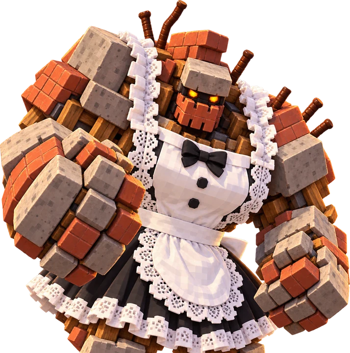
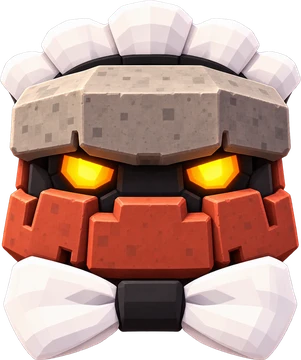
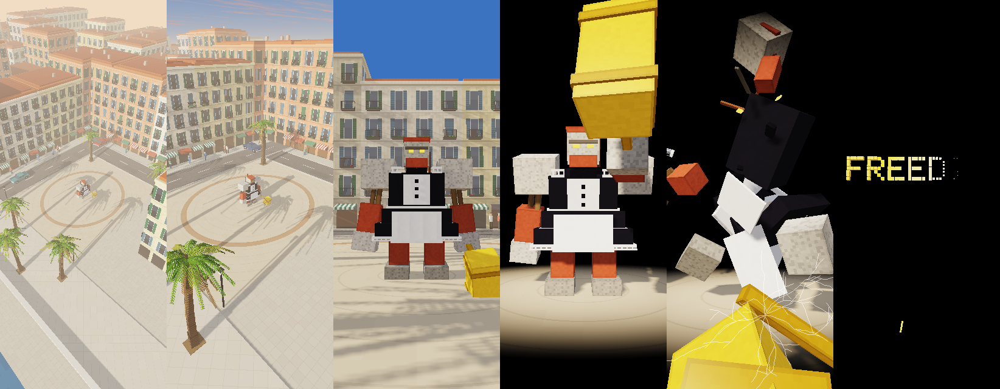

FREEDIE
A game for Android about knocking down buildings with a hammer, on a summer street of a seaside town.
0.38 · early days · no release yet

Who she is
Freedie is a stooping giant heaped together from what buildings are made of: stone shoulders and fists, brick forearms and jaw, planks for sinews, rusty rods out of her back, eyes like coals. And she is dressed, of all things, as a maid: a black dress, a white apron, lace. She is the mascot, the opening, and in time the one to beat.
The street, drawn live
This is not a video. Your browser draws the street here with the game's own shaders, the same ones the phone runs: first the sun's depth map, then the sky and some six thousand boxes into a frame 274 pixels across, then that frame onto the screen with every pixel a hard square.
The boxes are one frame the game wrote out on the desktop: houses with shutters, balconies and awnings, palms of blocks whose fronds let the light through, the promenade and the sea, parked cars, the plinth with its golden cube. Drag across, and the eye turns as it does in the game, and swings back when you let go. The red button on the lamp post glows; in the game, three presses on it open the dispatcher's bridge.
What the page cannot do: the cars stand still here, and nothing breaks. That needs the game itself.
The opening

- The eye flies in an arc high over the town and comes down onto a square: cars going by, people walking the far pavements.
- Freedie stands in the middle of it and raises her eyes.
- The town goes dark; light is left on her alone.
- She swings her golden hammer straight at you, and the glass cracks.
- She herself breaks apart and falls, every piece of her a body of the game's own physics; her heart, a golden cube, rises out of them.
- On the black, the name burns in gold.
- A flash, and the street. A touch at any moment goes straight there.
She opens every game. At the first meeting only, out of her pieces rises her heart, a golden cube, and it is the first of the cubes the game is played for. Then the street, the building on the plinth, and the hammer in your hand: drag to aim, hold still to wind up, let go to throw. Five stars, one a throw; three quarters of the building off the plinth before they run out. Lose the same one five times and the golden hammer is yours, and Freedie herself comes for you. Bring a building down and the dispatcher's room closes in over the street: the street stays on the tube of an old set, the real clock and date above it, the golden cube that powers it, the level below. Your hammer knocks the buttons on the console, one by one, for what the round gives, and last the one that goes on; the set flicks over, the room draws back, and the next building is already coming down.
Frames from the desktop stand, which plays the game's Java and draws it with the game's shaders. The sound is synthesized too: wind over the town, the swing, the blow, the pieces knocking down, a golden chime.
How it is made
- Java 8 and the platform alone, no build system, no libraries.
- The game lives in plain Java: rules, physics, what stands where. Each frame it fills a draw list, the eye, the sun, the sky and every box in the scene, and a renderer draws it.
- On the phone that renderer is OpenGL ES 3; on the desktop stand and on this page it is the same shaders in a browser.
- Everything you see is boxes; everything you hear is made by a synthesizer in the game.
Coming next: the first level: a building on the plinth, the hammer in your hand, the aim, the throw.